i2b2 Temporal Query Tool View
The Temporal Query Tool view extends the query functionalities provided by the classic Query Tool view. Users can submit temporal queries to using the Temporal Query Tool view.
i2b2 Temporal Query Tool View
The Temporal Query Tool view extends the query functionalities provided by the classic Query Tool view. Users can create and submit temporal queries to using the Temporal Query Tool view. It submits a "select query" that will retrieve information from the database associated to the i2b2 Web Client.
Introduction
The interface is organized to facilitate the temporal querying process. There are three main steps in the process: Defining a population, defining temporal relationships, and reviewing and submitting query. The interface is designed to take users through each of these three steps. The section below describes the interface for each step in detail.
The image below shows the starting point of the Temporal Query Tool view interface along with its annotations. Users would interact with the Group Panels to define a population they are interested in. In the next step, users would define the temporal relationships they are interested in. Finally, users would review and submit their queries in the third step. This section breaks down the interface for the 1st step.
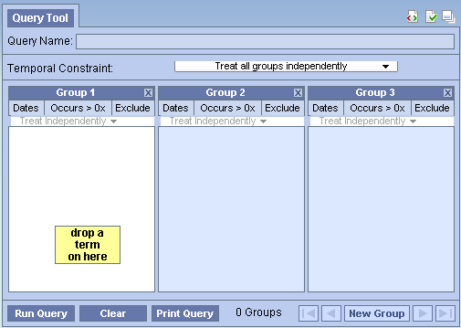
The Patient/Encounter Dropdown Box allows users to choose whether to define the population of the query using patients or encounters. The default is Patient:

Creating a population is optional. Users can skip Step 1 to use all data in the database.

At the start up, the interface for Step 1 displays three groups by default. Each of the groups contains several components. In general, all areas bounded by an orange-yellow highlight are clickable.
-
(Group Heading) The heading is a label to easily identify the collection of terms.
Each heading will contain "Group" followed by a sequential number.
Example: Group 1, Group 2, Group 3, etc.
- (Selection Criteria) This area of the panel is used to define date selections and other constraints.
- (Panel Timing) The panel timing defines the constraint on the panel level and uses the patient's visits in determining eligibility.
- (Group List) This section contains the terms that will be used during the process of querying the database.
- (Delete Group) Clicking on this button will remove the group from the query construction. Users should use it to quickly discard a group.
-
(Information Box) The content in the information box will change depending on whether or not a term is listed in the panel / group.
- No term(s) listed
- The message will appear as "drop a term on here"
- The color of the box will be yellow
- Term(s) listed
- The message will appear as "one or more of these"
- The color of the box will be green
- An additional information box will appear between panels
- No term(s) listed

The New Group button lets users to quickly add additional Groups.
A previous query saved in Workplace view or in the Previous Query view can be dragged and dropped here to reload the query. Reloading a query will overwrite the current query information. If the previous query is a temporal query, its population and temporal relationships will all be loaded. If the previous query is a non-temporal query, only the population portion of the temporal query interface will be loaded since a non-temporal query has no temporal relationship information.
Step 2: Define Temporal Relationships is used to define temporal relationships. It allows users to create a list of Events and a list of Temporal Relationships. Users define a list of interested Events and also define Temporal Relationships to describe how the events are related temporally, e.g. Event A must occur before Event B.
The interface is therefore a bit more complicated than Step 1 presented in the earlier section. It is broken into two major parts, presented below. On the left are the Event in Query panel and the Show Population panel. The Event in Query panel lets users define a list of Events. The Show Population panel allows users see and change the population definition originally defined in Step 1. On the right is a panel allowing users to add, remove, or modify relationships among the events.
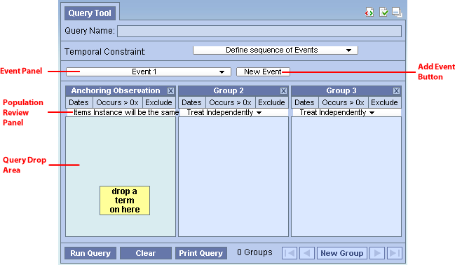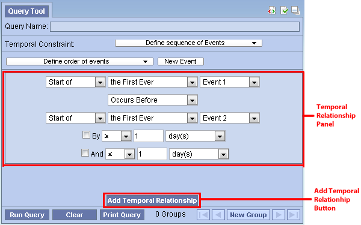
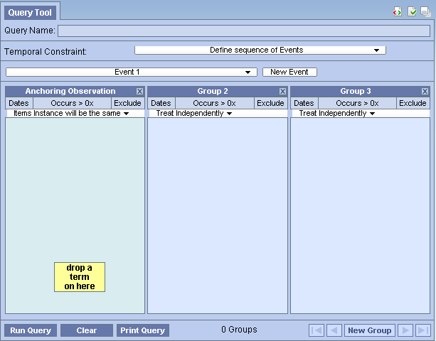(Event Panels at startup)
The Events in Query Panel allows users to add, remove, and edit each Event. Each Event is represented by an Event Panel. An Event consists of a list of Groups just like a population definition. Users can add, remove, and edit each of the Groups in an Event by dragging terms into a group, changing its constraints, etc. At startup, two empty Events are added, each with a Group. More Events can be added by clicking on the Add Event button.
One difference between an Event and a set of Groups in Step 1 is that the first Group in an Event is special. It cannot be removed (note the missing Remove Group button), and its Group Binding Control is missing. The Group Binding for the 1st Group of every Event is not changeable. All other Group's Group Bindings are changeable. The first group anchors all other groups in an Event. That is, the first Group determines the timing of the enclosing Event with respect to the other Events temporally in the query.
Under the list of Events is the gray background, which serves as a Query Drop Area. Users can drop previous query in the Query Drop Area to overwrite the current query. It has the same effect as the Query Drop Area in Step 1.
An Event Panel has several components.
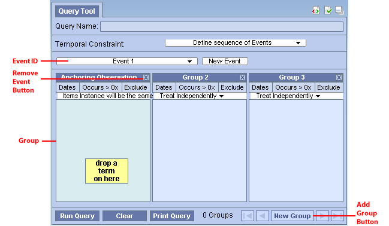
- (Event ID) This area shows the Event's name and color. Clicking on this area will expand/collapse the entire Event. When an Event Panel is collapsed, all its Groups are hidden. Only a row that contains the Event ID area is shown. Click on the Event ID area to expand the Event. All Events are expanded when created. Color of an Event is assigned only when at least one term has been added to it.
- (Event-Wide Date Constraints) Selecting this area allows users to specify date constraints for all Groups in this Event. This serves a similar function as the supplemental Query-wide Date Constraints Control Panel in the Step 1.
- (Remove Event Button) Clicking this button will remove the Event, deleting all its content and removing it from view.
- (Group Panel) The Group Panel is the same as the ones in Step 1.
- (Add Group Button) Clicking on it adds a new Group to the Event.
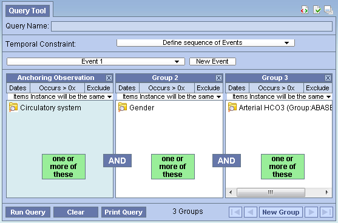
The population in Step 1 is shown. The title changes to "Edit Population," and every component is editable just as they are in Step 1.
Temporal Relationship Definition Panel
On the right hand side of the Step 3 interface is where users can define how Events are related to one another temporally. The Temporal Relationship Definition Panel contains a list of Temporal Relationship Panels and an Add Temporal Relationship Button. These components are described in detail below.
Please note that at least one Temporal Relationship Panel must be filled before users can move on to Step 3. A Temporal Relationship Panel is filled only if has a fulfilled Event in the Top Event Definition dropdown box and a fulfilled Event in the Bottom Event Definition dropdown box (see the image below). A fulfilled Event is one that has at least a fulfilled Group. A fulfilled Group is one that contains at least one term (not empty).
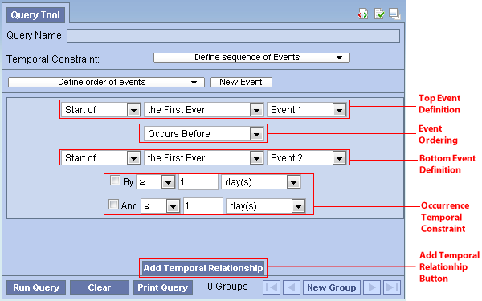
- The color indicator shows the colors of the Events that are being referenced in the Temporal Relationship. The top color (green in this example) matches the color of the Event in the Top Event Definition row and the bottom color (orange) matches the color of the Event in the Bottom Event Definition row. If an Event that has no content is referred, no color will be displayed in the Color Indicator.
-
(Top Event Definition)This row allows users designate the first Event
in this Temporal Relationship. A second event is specified in the Bottom
Event Definition row. The dropdown boxes have the following choices:
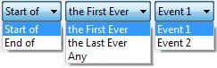(Dropdown box options for Event Definition)
-
(Event Ordering) This dropdown box describes how the Top Event elates
to the Bottom Event.
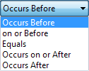 (Dropdown box options for Event Ordering)
- (Bottom Event Definition) This row allows users designate the second Event in this Temporal Relationship. It has the same dropdown box options as Top Event Definition.
-
(Occurrence Temporal Constraint) Users can optionally describe the specified
Event Ordering by a time range, creating the bolded part of, for example,
"Event 1 Occurs Before Event 2 By > 5 day(s)." This additional temporal
constraint can be a bounded range such as "By > 5 day(s) And < 10
day(s)." Users must first check the "By" checkbox to enable the dropdown
boxes on that row. The "And" checkbox becomes enabled only when the
"By" checkbox is checked. Checking the "And" checkbox enables the
dropdown boxes on its row. Both the By row and the And row have the
same options depicted below.
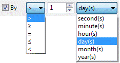 (Options for Occurrence Temporal Constraint)
- (Add Temporal Relationship Button) This adds a new Temporal Relationship Panel should users require more relationship constraints among Events.
The last step allows users to review and modify the name of the query and selection of analyses types they want the server to return as the results of the query.

Upon entering Step 3, a query name is automatically generated. A "(t)" prefix indicates the query is a temporal query, differentiating it from normal queries submitted using the classic query tool. Some terms used in the query are then appended to identify this query. A timestamp is added at the end. Users may modify the query name however they wish. The name in the Query Name Area will be displayed in the Previous Query view once the query is submitted
The area presents the different analyses types users can select as results of the query. They are exactly the same as the ones from the classic Query Tool:
| Table of Result Types | |
|---|---|
| Patient list | Provides a set of patients who met the search criteria. |
| Event list | Provides a set of encounters for those patients who met the search criteria. |
| Number of patients | Provides the total number of patients who met the search criteria. |
| Gender patient breakdown | Provides a breakdown of the patients by their gender. |
| Vital Status patient breakdown | Provides a breakdown of the patients by their vital status. |
| Race patient breakdown | Provides a breakdown of the patients by their race. |
| Age patient breakdown | Provides a breakdown of the patients by their age |
| Timeline | Provides a set of patients who met the defined criteria and automatically generates a timeline in the timeline view. |
By default Number of patients and Timeline are selected.
In Step 3, the Footer is different. Instead of another "Next" button, a Submit Query Button is there instead. It allows users to execute the query they have built in Step 1 and Step 2.
After pressing Submit Query, the button will become inactive to prevent inadvertent submission. A "Processing..." text will display to indicate that the query is being sent to the server for processing. The red rectangular button allows users to cancel the query submission.

When the server completes the processing, the number of patients found will be returned:

If the query takes too long, a message will be displayed instead, in addition, the Submit Query Button will become available again. Users are advised to monitor the Previous Queries view to see when the query finishes.
|
NOTE: The result types that appear will depend on what you have selected when running the query.. |
Many of the UI elements discussed above are for display only. That is, they display the content of a Group or an Event or a Query, but they do not themselves allow editing of the values. Instead, users have to click on display components to launch an editor. The various editors are presented here.
This dialogs are all modal. That means no other actions can be performed when the dialog is launched. Users must first dismiss (typically by either selecting OK or Cancel) the dialog before other UI elements in the Web Client can be interacted with.
The dialogs can be moved by dragging the blue title area around, and they usually appear where the mouse pointer is when launched.
-
(Date Constraint Editor) The Date Constraint Editor is launched when
user clicks on a Date Constraint Control in every Group Panel, in the
title area of an Event, in the Supplemental Control Panel in Step 1,
and in the View Population Panel in Step 2.
The editor starts up as the left-most figure below. Clicking on either of the orange-yellow-highlighted textboxes will launch a calendar widget for users to select the start (middle figure) or the end date (right-most figure). When finished, users should click on the OK button in the gray footer area to accept the constraints. Alternatively, clicking the Cancel button will leave the original date constraints unmodified.
The start and end date constraints are both inclusive. That is if the start date is January 1, 1999, and the end date is December 31, 1999, the range of the constraint spans from 1/1/1999 00:00:00.000 to 12/31/1999 23:59:59.999.

-
(Group Binding Editor) The Group Binding Editor is found in every
Group Panel. It lets users change the binding for that Group. The left
figure depicts the initial appearance when a Group Binding Editor is launched.
It consists of three rows, each represent a binding option. The last option
(Bound-by-Observation) is only available as a choice if a modifier is dropped
in the Group. Selecting one of the radio buttons and clicking on OK
will set the new binding. Cancel will cancel the operation and leave the
original binding unmodified.
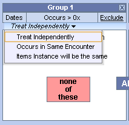
-
(Occurrence Count Constraint Editor) This editor can be launched in every
Group by clicking on its Count Control area. Users can specify how many (or
few) times the terms in a Group must occur. The editor itself is simple: a
dropdown box specifies the type of operator and a spinner allowing for a number to be
specified.
The left figure shows the dialog at startup, and the right figure shows all the operator options.


-
(Value Editor) When users drop an ontology term that can be further
constrained by values into a Group, a Value Editor will automatically
launch. Users can use this editor to select a way to constrain the value of the term
and specify what values to constrain the term by. If a term that supports values
already exists in a Group, users can right click on the term and select
"Edit Value..." to launch the Value Editor for that term. Please note
that some Modifiers do not support values (e.g. Circulatory Systems [Primary
diagnosis]).
 (Right click on a term that supports value
constraints to launch the Value Editor)
(Right click on a term that supports value
constraints to launch the Value Editor)Note that the constraint is optional. The default constraint put on these terms is "No Value," and by closing the dialog immediately, users can quickly accept the default constraint. Please note that closing the dialog does not cancel the value editing operation, it instead accepts the values that are currently set.
If multiple terms were dropped at the same time, all terms that support value constraints in the same drop will appear in a list the left side of dialog. Users can select the terms on the list to view and edit its value constraint. Alternatively, users can use the navigation buttons "Previous", "Next" to navigate. Finally, to finish, users should select the last term on the list and click on "Finish."
 (The Value Editor
shows two terms on its list on the left. The right half shows the currently set value constraints for the selected
term on list. The default is "No Value." Users can also navigate the list by using
the "Next" "Previous" buttons on the bottom of the right half. When
finished, click on the "Finish" button or simply close the dialog.)
(The Value Editor
shows two terms on its list on the left. The right half shows the currently set value constraints for the selected
term on list. The default is "No Value." Users can also navigate the list by using
the "Next" "Previous" buttons on the bottom of the right half. When
finished, click on the "Finish" button or simply close the dialog.)Different terms support different kinds of value constraint, some are constrained by text, some by numeric value, some by a list of pre-arranged values, and some by abnormal flags. For example, the Color term supports abnormal flags and a list of pre-arranged values. These options are shown on the right half of the dialog. By selecting the radio buttons, users can choose the kind of constraint they want. Here are the screen shots of the right half of the dialog when radio buttons other than "No Value" are chosen for the term Color.


Creating a Query
This section describes the process of adding items to the query tool, "AND" / "OR" operators and setting constraints.
In order to create your query, you will need to define what information will be retrieved from the databases. Selected items from other i2b2 Web Client views can be dragged and dropped (copied) into the Temporal Query Tool view.
- Concepts
Concepts () can be defined as terms, results, providers, etc. They can be added as a group (folder ()) or individually by dragging the item(s) from Navigate Terms, Find Terms, and Workplace views.
- Modifiers
Modifiers () are associated with a concept or group of concepts. They can be added as a group (modifier folder ()) or individually by dragging the item(s) from Navigate Terms, Find Terms, and Workplace views.
- Previous Query
A new query can be created from one that has already been run by dragging the previous query ( or) from Previous Query and Workplace views.
-
Patient List
A patient list () can be used in a query by dragging the item(s) from Previous Query and Workplace views.
- Individual Patient
A patient () or several patients can be used in a query by dragging them from Previous Query view and Workplace views.
- Event List
An event list () can be used in a query by dragging the item(s) from Previous Query and Workplace views.
- Query Definition
A new query can be created from one that has already been run by dragging the query definition () from the Workplace view.
- Group Template
Users can define a group of concepts that they frequently run and save them in their workplace view. This grouping of concepts is referred to as a group template ().
A new query can be created using the group template by dragging the template from Workplace view to the Group Header.
There are two operators, known as SQL Logical Operators, which are necessary when running a query that has more than one term. These operators provide a way to specify exactly what users want to retrieve. The operators are the 'AND' and 'OR' operators.
The query tool knows which operator to use based on the panels used when defining the query. It is important to verify the users are setting up their query correctly as each operator will return different results.
The AND operator returns a record if both the first condition and the second conditions are true.
The query tool uses the AND operator when concepts are listed in different panels.
Example:
WHAT: Return only those patients who have Acute Myocardial Infarction AND Angina Pectoris.
HOW: In the query tool add the concept Acute Myocardial Infarction to Group 1 and then add the concept Angina Pectoris to Group 2 .
RESULT: The population is limited by requiring the patients to have both Acute myocardial infarction and Angina pectoris..

The OR operator returns a record if either the first condition or the second conditions is true.
The query tool uses the OR operator when concepts are listed in the same panel.
Example:
WHAT: Return any patients who have Acute Myocardial Infarction or Angina Pectoris associated to them.
HOW: In the query tool you add both concepts, Acute Myocardial Infarction and Angina Pectoris, to Group 1.
RESULT: The population is limited to include all patients who fit either one of those criteria.

In short, terms within a Group are ORed together, while different Groups are ANDed together.
Concepts can be added to the Query Tool view by simply dragging the concept from one of the following views.
1. Navigate Terms view
2. Find Terms view
3. Workplace view
How to add a concept from each of these views is explained in the next few sections.
The Navigate Terms view contains a hierarchical display of all the items that can be used to search the database.
Note: How the items are grouped and displayed is dependent on how the database is setup.

Add Concept From Navigate Terms View
1. In the Navigate Terms view, expand the folder(s) that contain the concept or grouping of concepts that you want to add.
2. Highlight the concept
( ) or folder
() by clicking on its name.
) or folder
() by clicking on its name.
3. While holding the left mouse button down, drag the item over to the Query Tool View.
4. Drop the item into the panel labeled Group 1.

5. The item will now display in the panel for Group 1.

The Find Terms view provides a way to search for a particular concept and modifier.

Add Concept From Find Terms View
1. In the Find Terms view, search for the item(s) you want to add.
2. Highlight the concept
( ) or folder
() by clicking on its name.
) or folder
() by clicking on its name.
3. While holding the left mouse button down, drag the item over to the Query Tool View.
4. Drop the item into the panel labeled Group 1.
5. The item will now display in the panel for Group 1.
Information in the Workplace is related to the most common concepts, modifiers, and queries that an individual uses and in essence becomes their personal workplace.

Add Concept From Workplace View
1. In the Workplace view, expand the folder(s) that contain the concept or grouping of concepts you want to add.
2. Highlight the concept
( ) or folder
() by clicking on its name.
) or folder
() by clicking on its name.
3. While holding the left mouse button down, drag the item over to the Query Tool View.
4. Drop the item into the panel labeled Group 1.
5. The item will now display in the panel for Group 1.
Modifiers can be added to the Query Tool view by simply dragging the modifier from one of the following views.
1. Navigate Terms view
2. Find Terms view
3. Workplace view
How to add a modifier from each of these views is explained in the next few sections.
The Navigate Terms view contains a hierarchical display of all the items that can be used to search the database.
Note: How the items are grouped and displayed is dependent on how the database is setup.
Add modifier From Navigate Terms View
1. In the Navigate Terms view, expand the folder(s) that contains the modifier or grouping of modifiers that you want to add.
2. Highlight the modifier () or modifier folder () by clicking on its name.
3. While holding the left mouse button down, drag the item over to the Query Tool View.
4. Drop the item into the panel labeled Group 1.

5. The item will now display in the panel for Group 1.

The Find Terms view provides a way to search for a particular concept and modifier.
Note: For detailed information on how to search for terms and modifiers, please see the i2b2 Find Terms View chapter.
Add Modifier From Find Terms View
1. In the Find Terms view, search for the modifier(s) you want to add.
2. Highlight the modifier () or modifier folder () by clicking on its name.
3. While holding the left mouse button down, drag the item over to the Query Tool View.
4. Drop the item into the panel labeled Group 1.
5. The item will now display in the panel for Group 1.
Information in the Workplace is related to the most common concepts, modifiers, and queries that an individual uses and in essence becomes their personal workplace.
Add Modifier From Workplace View
1. In the Workplace view, expand the folder(s) that contain the modifier or grouping of modifiers you want to add.
2. Highlight the modifier () or modifier folder () by clicking on its name.
3. While holding the left mouse button down, drag the item over to the Query Tool View.
4. Drop the item into the panel labeled Group 1.
5. The item will now display in the panel for Group 1.
A previous query can be used to run a new query or as an item within a query (query-in-query). To add a previous query to the Query Tool view simply drag the query name from one of the following views.
1. Previous Query view
2. Workplace view
Within the Query Tool view, the previous query can be added to one of the following two locations.
| Query Name field |
The item(s) and constraints from the original query will
be used to create a new query. This information can be edited to make a new
query or can be used as is to run the query again.
Please note that the tool does not currently support dropping of a previous query of a previous query or a previous query of a temporal query. |
|---|---|
| Panel (Group) | Used within a new query (query-in-query). Add additional search criteria (items) to be used in the new query. |
How to add a previous query from each of the views listed above is explained in the next few sections.
The Previous Query view displays the queries that were run by the user.

Add Previous Query From Previous Query View (New Query)
1. In the Previous Query view highlight the previous query () by clicking on its name
2. While holding the left mouse button down, drag the item over to the Temporal Query Tool View.
3. Drop the previous query into the Query Drop Area in either Step 1 or Step 2.
4. The terms, Groups, Events, and Temporal Relationships defined in that previous query will be reconstituted in the current interface. If the previous query is a non-temporal query, then only the Population portion of the UI will be reconstituted. If the previous query is a temporal query, then both the Population portion and the temporal relationship portion of the UI will be reconstituted.
Add Previous Query From Previous Query View (Query-In-Query)
1. In the Previous Query view highlight the previous query () by clicking on its name
2. While holding the left mouse button down, drag the item over to the Query Tool View.
3. Drop the previous query into the panel labeled Group 1.
4. The previous query will now display in the panel for Group 1.

Information in the workplace is related to the most common concepts, modifiers, and queries that an individual uses and in essence becomes their personal workplace.
Add Previous Query From workplace View (New Query)
1. In the Workplace view, expand the folder(s) that contains the previous query you want to add.
2. Highlight the previous query () by clicking on its name
3. While holding the left mouse button down, drag the item over to the Query Tool View.
4. Drop the previous query into the Query Drop Area in either Step 1 or Step 2.
5. The terms, Groups, Events, and Temporal Relationships defined in that previous query will be reconstituted in the current interface. If the previous query is a non-temporal query, then only the Population portion of the UI will be reconstituted. If the previous query is a temporal query, then both the Population portion and the temporal relationship portion of the UI will be reconstituted.
Add Previous Query From Previous Query View (Query-In-Query)
1. In the Workplace view, expand the folder(s) that contains the previous query you want to add.
2. Highlight the previous query () by clicking on its name
3. While holding the left mouse button down, drag the item over to the Query Tool View.
4. Drop the previous query into the panel labeled Group 1.
5. The previous query will now display in the panel for Group 1.

A patient list can be added to the Query Tool view by simply dragging the list of patients from one of the following views.
1. Previous Query view
2. Workplace view
How to add a patient list from each of the views is explained in the next few sections.
The Previous Query view displays the queries that were run by the user.
Add Patient List From Previous Query View
6. In the Previous Query view click on the plus sign () next to the name of the previous query that contains the patient set.
7. Click on the plus sign () next to the results folder.
8. Highlight the patient list () by clicking on its name
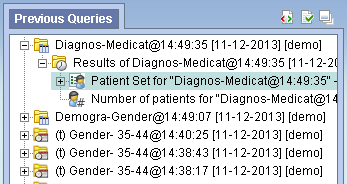
9. While holding the left mouse button down, drag the item over to the Query Tool View.
10. Drop the patient set into the panel labeled Group 1.

11. The patient set will now display in the panel for Group 1.

Information in the workplace is related to the most common concepts, modifiers, and queries that an individual uses and in essence becomes their personal workplace.
Add Patient List From Workplace View
12. In the Workplace view find the patient list you want to add.
13. Highlight the patient list () by clicking on its name
14. While holding the left mouse button down, drag the item over to the Query Tool View.
15. Drop the patient set into the panel labeled Group 1.
16. The patient set will now display in the panel for Group 1.
An encounter set can be added to the Query Tool view by simply dragging the encounter set from one of the following views.
1. Previous Query view
2. Workplace view
How to add an event list from each of the views is explained in the next few sections.
The Previous Query view displays the queries that were run by the user.
Add Event List From Previous Query View
1. In the Previous Query view click on the plus sign () next to the name of the previous query that contains the encounter set.
2. Click on the plus sign () next to the results folder.
3. Highlight the encounter set () by clicking on its name
4. While holding the left mouse button down, drag the item over to the Query Tool View.
5. Drop the encounter set into the Group 1.
6. The encounter set will now display in the panel for Group 1.

Information in the workplace is related to the most common concepts, modifiers, and queries that an individual uses and in essence becomes their personal workplace.
Add Event List From Workplace View
1. In the Workplace view find the encounter set you want to add.
2. Highlight the encounter set () by clicking on its name
3. While holding the left mouse button down, drag the item over to the Query Tool View.
4. Drop the encounter set into Group 1.
5. The encounter set will now display in the panel for Group 1.
A query definition can be added to the query tool view by simply dragging the query name from the workplace view.
Add Query Definition From Workplace View
1. In the Workplace view, find the query definition you want to add.
2. Highlight the query definition () by clicking on its name
3. While holding the left mouse button down, drag the item over to the Query Tool View.
4. Drop the query definition into the Query Drop Area in Step 1 or Step 2.
5. The item(s) associated with the query definition will display in the appropriate group(s), the name of the query will appear at Query Name, and any constraints that were defined when the original query was run will now default with the new query.
Three Group Panels are displayed in Step 1 by default. In step 2, only one Group Panel is available per Event. Some complex queries may require the use of additional panels. Users may use the "Add Group" button to add more Groups.
1. Click on the Add Group button.

(Add Group button in Step 1)
2. A new panel is added with each click (two clicks are performed here to create a total of three Group Panels).

In Step 2, there is an "Add Group" button for each Event, and an additional one to add Group to the population. These "Add Group" button work exactly the same as the one described above.
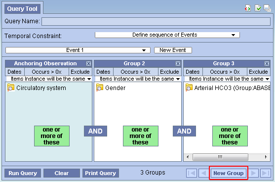
(Step 2 "Add Group" button)
Users can remove a Group from a query (or Event in the temporal query UI) or a term in a Group.
1. Click on the Remove Group button () located to the right top of every Group.
2. The Group and all its content will be removed
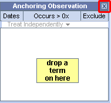
Delete a Single Item
1. Right click on the item in the group that you want to remove.

2. Select Delete Item from the list.
3. The item will be removed from the Group Panel
Constraints are used to narrow down the search criteria to a particular time from, number of occurrences or a specific value or range of values. In i2b2, there are several types of constraints that can be defined in the Query Tool view.
| Constraint Type | Description |
|---|---|
| Group Binding (Panel Timing) | Constraint is defined on the Group and utilizes the patient encounters and / or instance number when determining eligibility. There are three binding choices. The most general one is bound-by-patient, followed by bound-by-encounter, and finally, the strictest one is bound-by-observation. |
| Date | Constraint uses a date range when determining eligibility. |
| Occurrence | Constraint is by the number of occurrences an item is documented. |
| Value | Constraint is by the value associated to a concept or modifier. Not all items have values. |
Note: In the client, the value constraints are currently the only ones that directly correspond to a single concept. All others are defined on the query or Group level.
Group binding constraints utilize the encounter/observation information along with the items defined to determine if a patient meets the search criteria.
Note that this is previously known as Panel Timing in the classic Query Tool. In the classic Query Tool, users can also specify Query Timing. In the Temporal Query Tool, Query Timing is automatically set by the choice of Group Bindings. That is, the strictest Group Binding dictates what the Query Timing is:
- if there is a Group that is "bound-by-observation," then the query timing will be "bound-by-observation" (or in the classical terminology, "same instance.")
- If there is a Group that is bound-by-encounter," but no Groups "bound-by-observation," then the query timing will be "bound-by-encounter," (or classically, "same encounter.")
- Otherwise the query timing is "bound-by-patient" ("treat independently.")
Group Binding sets the binding for each Group. Possible values are Bound-by-Patient, Bound-by-Encounter, and Bound-by-Observation. These constraints tell the query processor that these Groups describe the same patient, encounters or observation.
In step 1, the default binding for each Group changes depending on whether users are defining a Patient Population or an Encounter Population. If Patient Population is used, then Bound-by-Patient is the default, and it is unchangeable. If Encounter Population is used, then Bound-by-Encounter is the default. However, in this case, users can change each Group's binding to Bound-by-Patient if they so desire or to Bound-by-Observation if a modifier term is used in that Group.
Users can select one of three available options:
1. (Bound-by-Patient) The items (facts) can occur at any time in the patient's history.
2. (Bound-by-Encounter) The items (facts) occur during the same encounter (e.g. visit to hospital).
3. (Bound-by-Observation) The items (facts) occur during the same observation.
The values are hierarchical: a Group that is bound-by-observation is also bound-by-encounter and bound-by-patient. A group that is bound-by-encounter is also bound-by-patient. Every group is bound-by-patient.
The Group Binding for a Group can be set by launching the Group Binding Editor, by clicking on the highlighted area in a Group:
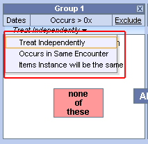
The Group Binding Editor consists of 3 rows, each representing a possible Group Binding value. Selecting one will set the value.
Users can also set the Group binding for all Groups using the Group Binding Control Panel in the Supplemental Control Panel in Step 1.
The items (facts) can occur at any time in the patient's history.
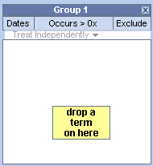
The items (facts) occur during the same encounter (e.g. visit to hospital).
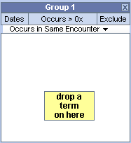
Example:
Patient has a diagnosis of Acute MI documented at any time in their history and they have a medication with a dose greater than 500 mg and a medication that is taken once a day documented during the same encounter.

RESULTS: In our database, there are 4 patients who have had a medication with a dose greater than 500 mg and a frequency of once a day entered as a fact in the observation_fact table, where the medication dose and frequency have the same encounter_num AND the diagnosis of acute MI, the medication dose and frequency all have the same patient_num.
The items (facts) listed in the panel occur during the same observation of a visit.
Example:
Patient has a diagnosis of Acute MI documented at any time in their history and they have a medication with a dose greater than 500 mg and a medication that is taken once a day documented during the same instance.

RESULTS: In our database, there are 3 patients who have had a medication with a dose greater than 500 mg and a frequency of once a day entered as a fact in the observation_fact table, where the medication dose and frequency have the same encounter_num AND instance_num AND the diagnosis of acute MI, the medication dose and frequency all have the same patient_num.
Users can define a date range to be used when querying the database. This date range can be in any one of the following combinations. Note that all start and end dates are inclusive.
SPECIFIED DATE RANGE: FROM AND TO DATES DEFINED
Only data with activity within the defined date range will be used.
Example:

Concept: Acute Myocardial Infarction
From date: 01/01/2001
To date: 12/31/2005
In this example, if a patient has a diagnosis of Acute Myocardial Infarction (MI) entered on the record from 01/01/2001 to 12/31/2005 then their data will be included. If the patient does have an MI diagnosis but it was entered prior to 01/01/2001 or after 12/31/2005 then their information will not be included.
SPECIFIC START DATE: ONLY THE FROM DATE IS DEFINED
Data from the defined start date to the latest date available. No end date defined.
Example:

Concept: Acute Myocardial Infarction
From date: 01/01/2001
To date:
In this example, if a patient has a diagnosis of Acute Myocardial Infarction (MI) entered on the record any time on or after 01/01/2001 will be included. If the diagnosis was entered prior to 01/01/2001 then the data will not be included.
SPECIFIC END DATE: ONLY THE TO DATE IS DEFINED
All data up until the defined end date. No start date defined.
Example:

Concept: Acute Myocardial Infarction
From date:
To date: 12/31/2005
In this example, if a patient has a diagnosis of Acute Myocardial Infarction (MI) entered on the record prior to and including 12/31/2005 then their data will be included. If the diagnosis was entered after 12/31/2005 then it will not be included.
- Click on the Dates button located in the selection criteria section of the panel.
- A new window will open.
- Click the check box next to the date in the From box.
- At this point there are two methods of entering your starting date.
- Manually type it in the text box.
- Click on the drop-down arrow (
 ) to open the calendar view and click on the desired date.
) to open the calendar view and click on the desired date.
- Click the check box next to the date in the To box.
- Highlight the default date or click on the drop-down arrow and enter the date you want to use as your ending date.
- Click on the OK button.
- Dates will now be underlined to indicate a date constraint has been set.

Once you click on the desired date the calendar window will close.


Users can define a number of times an item has to occur in order to be considered a positive "hit". Please note that the Occurrence Constraint and Exclusion from the classic query tool have been rolled into the same constraint. Here is an example of conversions from the classical query tool occurrence and exclude specification to the new occurrence constraint specification:
1. (Exclude 1) (exclude anyone who has one or more occurrence of the desired terms) -> Edit the occurrence to (=0).
2. (Exclude 2) (Exclude anyone who has two or more occurrences of the desired terms) -> Edit the occurrence to (<2).
3. (1) (Only take those who have one or more occurrences of the desired terms) -> Edit the occurrence to (>0). (This is the default)
4. (2) (Only take those who have two or more occurrences of the desired terms) -> Edit the occurrence to (>2).
Setting the Occurrences Constraint
1. Click on the Occurrence Count Control located in the top part of a Group Panel.
2. The Occurrence Count Editor will open.
3. Use the dropbox to select the desired operator and the spinner to choose the desired number. The dropbox has the following options:

4. Click on the OK button to accept.
5. Occurrence Count Control will update to the new constraint (4 examples provided below):

Different operator/number combinations will have different background. The default (>0) is white with gray text. If the operator is > and the number is greater than 0, then it will be green. If the operator is < or =, then the background will be pink. Please note that choosing the equal (=) operator restricts the number to zero (0) - you cannot choose equals x (=x), where x is any non-zero number.
Value constraints can be associated with concept and modifiers but not all of them will have values. For instance, the diagnosis of Acute Myocardial Infarction does not have a value but the tests used to make the diagnosis do have values (high/ low flags, or numeric values, etc.).
Flags are defined in the source system when the value is entered. The following are some examples that can be found in the i2b2 Demo database.
- High
- Low
- Abnormal
Setting the Value Constraint (Flag) for a Concept
|
NOTE: The value constraint window will open automatically when you drop a concept into a panel in the Query Tool view. This will only happen if the concept is set up in the database with XML metadata. The first three steps can be used if you did not add a value constraint when you added the item or if you wish to edit an existing item. |
- Using the right mouse button, click on the item listed in the panel.
- A pop-up menu will open.
- Select Set Value from the list.
- A new window will open.
- Click on the radial dial next to By flag.
- A new field with a drop-down selection box will appear.
- Click on the drop-down arrow to change the flag or accept the default.
- Click on the OK button.
- The value constraint has been set.

Setting the Value Constraint (Flag) for a Modifier
|
NOTE: The modifier value constraint window will open automatically when you drop a modifier into a panel in the Query Tool view. This will only happen if the modifier is set up in the database with XML metadata. The first three steps can be used if you did not add a value constraint when you added the item or if you wish to edit an existing item. |
- Using the right mouse button, click on the item listed in the panel.
- A pop-up menu will open.
- Select Set Value from the list.
- A new window will open.
- Click on the radial dial next to By flag.
- A new field with a drop-down selection box will appear.
- Click on the drop-down arrow to change the flag or accept the default.
- Click on the OK button.
- The value constraint has been set.

The text value is defined in the source system when the value is entered. The following are some examples that can be found in the i2b2 Demo database.
- Test Not Performed
- Borderline
- Positive
Setting the Value Constraint (Text) for a Concept
|
NOTE: The value constraint window will open automatically when you drop a concept into a panel in the Query Tool view. This will only happen if the concept is set up in the database with XML metadata. The first three steps can be used if you did not add a value constraint when you added the item or if you wish to edit an existing item. |
- Using the right mouse button, click on the item listed in the panel.
- A pop-up menu will open.
- Select Set Value from the list.
- A new window will open.
- Click on the radial dial next to By value.
- A new field listing the enumerated values will appear.
- Click on the name of the value you want to include.
- Click on the OK button.
- The value constraint has been set.


|
TIP: To select more than one you can hold down the <Ctrl> key while clicking on each name. On the Macintosh you can hold down the command key instead of the <Ctrl> key. |

Setting the Value Constraint (Text) for a Modifier
|
NOTE: The modifier value constraint window will open automatically when you drop a modifier into a panel in the Query Tool view. This will only happen if the modifier is set up in the database with XML metadata. The first three steps can be used if you did not add a value constraint when you added the item or if you wish to edit an existing item. |
- Using the right mouse button, click on the item listed in the panel.
- A pop-up menu will open.
- Select Set Modifier Value from the list.
- A new window will open.
- Click on the radial dial next to By value.
- A new field listing the enumerated values will appear.
- Click on the name of the value you want to include.
- Click on the OK button.
- The value constraint has been set.


|
TIP: To select more than one you can hold down the <Ctrl> key while clicking on each name. On the Macintosh you can hold down the command key instead of the <Ctrl> key. |

The numeric value is defined in the source system when the result is entered. The following are some example formats that can be found in the i2b2 Demo database.
- 200
- 1.3
Unlike flag and text values, numeric values use operators, such as greater than or less than when setting the constraints. The following is a listing of operators currently in use.
| Operator | Description / Use |
|---|---|
| Less Than (<) | Any value less than the number entered. |
| Less Than or Equal To (<=) | Any value less than or equal to the number entered (inclusive). |
| Equal To (=) | An exact match to the number entered. |
| Between | Any value in the range of numbers entered. |
| Greater Than (>) | Any value greater than the number entered. |
| Greater Than or Equal To (>=) | Any value greater than or equal to the number entered (inclusive). |
Setting the Value Constraint (Numeric) for a Concept
|
NOTE: The value constraint window will open automatically when you drop a concept into a panel in the Query Tool view. This will only happen if the concept is set up in the database with XML metadata. The first three steps can be used if you did not add a value constraint when you added the item or if you wish to edit an existing item. |
- Using the right mouse button, click on the item listed in the panel.
- A pop-up menu will open.
- Select Set Value from the list.
- A new window will open.
- Click on the radial dial next to By value.
- Two new fields will appear; one with a drop down selection box and the other a text box.
- Click on the drop-down arrow to change the operator or accept the default.
- Enter a numerical value at the Please enter a value field.
- Click on the OK button.
- The value constraint has been set.


Setting the Value Constraint (Numeric) for a Modifier
|
NOTE: The modifier value constraint window will open automatically when you drop a modifier into a panel in the Query Tool view. This will only happen if the modifier is set up in the database with XML metadata. The first three steps can be used if you did not add a value constraint when you added the item or if you wish to edit an existing item. |
- Using the right mouse button, click on the item listed in the panel.
- A pop-up menu will open.
- Select Set Modifier Value from the list.
- A new window will open.
- Click on the radial dial next to By value.
- Two new fields will appear; one with a drop down selection box and the other a text box.
- Click on the drop-down arrow to change the operator or accept the default.
- Enter a numerical value at the Please enter a value field.
- Click on the OK button.
- The value constraint has been set.


Using Units In Value Constraints
Units in regards to i2b2 are the standard units of measurement associated with a value. For instance, a medication may have "mg" listed as the unit for the dose, while a HGB lab test may have "gm/dL".
The units are defined in the source system and although it is recommended that all numerical facts are stored in normalized units it is recognized that this is not always feasible. Therefore, the Web Client has the ability to convert the units when running a query.
In order for this feature to work a parameter called CRC_ENABLE_UNITCD_CONVERSION must be defined for the project. If this is not defined you need to contact your system administrator.
Defining the Units When Running a Query
|
NOTE: The modifier value constraint window will open automatically when you drop a modifier into a panel in the Query Tool view. This will only happen if the modifier is set up in the database with XML metadata. The first three steps can be used if you did not add a value constraint when you added the item or if you wish to edit an existing item. |
- Using the right mouse button, click on the item listed in the panel.
- A pop-up menu will open.
- Select Set Modifier Value from the list.
- A new window will open.
- Click on the radial dial next to By value.
- Two new fields will appear; one with a drop down selection box and the other a text box.
- The Units will default to the normal units defined for the item.
- Click on the drop-down arrow to change the units.
- Click on the drop-down arrow to change the operator or accept the default.
- Enter a numerical value at the Please enter a value field.
- Click on the OK button.
- The value constraint has been set and the numerical value has been converted to the normal units.


In the above scenario, the normal units are "mg". When setting up the value constraint the units were changed to "gm" and the numerical value was set to 5. Upon saving the value constraint, the Web Client converted 5 gm to 5000 mg. When the query is run it will look at those facts that have both 5 gm and 5000 mg defined in the observation_fact table.
|
NOTE: The unit conversion information is specific to the term and is defined in the i2b2 metadata table. |
Running a Query
This section describes the process of running a query and getting results.
Before users submit their query to the server, they must select the analysis types they want from the Analysis Type Area in Step 3. There are several result types available, each of which will yield a different output.
| Patient list | Provides a set of patients who met the search criteria. |
|---|---|
| Event list | Provides a set of encounters for those patients who met the search criteria. |
| Number of patients | Provides the total number of patients who met the search criteria. |
| Gender patient breakdown | Provides a breakdown of the patients by their gender. |
| Vital Status patient breakdown | Provides a breakdown of the patients by their vital status. |
| Race patient breakdown | Provides a breakdown of the patients by their race. |
| Age patient breakdown | Provides a breakdown of the patients by their age |
| Timeline | Provides a set of patients who met the defined criteria and automatically generates a timeline in the timeline view. |
By default Number of patients and Timeline are selected.
This option will return a list of patients who met the defined criteria and will add the query and patient list to the previous query view.

This option will return a set of encounters for those patients who meet the defined criteria and will add the query and patient list to the previous query view.

This option will return a total count for those patients who meet the defined criteria and will display the appropriate information in the following two views.
Previous Query View - displays the query and the results returned.

Note: The number is displayed in the tool tip, which can be seen by hovering over Number of Patients.
This option will return a breakdown by gender for those patients who meet the defined criteria and will display the appropriate information in the following two views.
Previous Query View - displays the query and the results returned.

Vital Status Patient Breakdown
This option will return a breakdown by vital status for those patients who met the defined criteria and will display the appropriate information in the following two views.
Previous Query View - displays the query and the results returned.

This option will return a breakdown by race for those patients who met the defined criteria and will display the appropriate information in the following two views.
Previous Query View - displays the query and the results returned.

This option will return a breakdown by age for those patients who met the defined criteria and will display the appropriate information in the following two views.
Previous Query View - displays the query and the results returned.

This option will return a list of patients who met the defined criteria and will display the appropriate information in the following two views. The current implementation of Temporal QueryTool does not automatically launch the Timeline visualization. Instead, users will need to drag the previous query (or the patient set) and drop it into Timeline's configuration panel.
1. Timeline View - displays the patients and associated concepts in the format of a timeline.

2. Previous Query View - displays the query and the results returned.
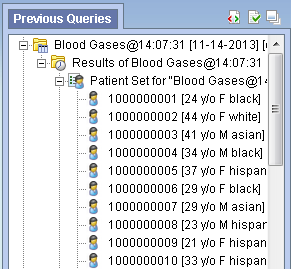
Once the query has been created and the Analysis types selected, the final step to retrieve your information is to run the query. This is done by clicking on the Submit Query in the query tool.

Once you begin the process of running the query the button become inactive, and a processing indicator will appear:
When the query process concludes, the results will be shown:
If the query takes longer than the Web Client expects, the query will be queued up on the server side and will be finished at a later time. An entry is created in the Previous Query view immediately and users are to check the entry periodically to see when the query completes. The following message will also be displayed at the Footer. The Submit Query button will become active so users can submit another query.
Cancel a Query
To cancel a query you simply click on the Cancel Query button.
|
NOTE: Keep in mind "Cancel Query" and the associated action will only appear when the query is still in the process of running |
- To cancel a query that is running, simply click on the Cancel Query button.

- Cancel will display in the Query Status view.

Saving a Query
A previous query () is created automatically when the query is run from the Temporal Query Tool. The query is stored and displayed in the Previous Query View. Temporal Query Tool does not currently support saving query definitions.
Note: Previous queries can also be seen in Workplace View if the user copied it to their workplace or shared folder in workplace view.
1. Run a query.
2. Go to the Previous Query View.
3. The query you just ran will now appear in the list of previous queries.
Printing a Query
Users are able to print out the query information if they wish to have a hard copy of the search criteria defined for a query.
When printing a query you can either print the information for a current query or you can drag a previous query to the query tool view and print the information associated with that query.
The following steps outline the process of printing a query once you have the appropriate query in the Query Tool.
- Click on the Print Query button located on the toolbar at the bottom of the Query Tool view

- A new window will open displaying the information about the query.

- On the menu bar, click on File to display the menu options.
- Select Print from the menu.